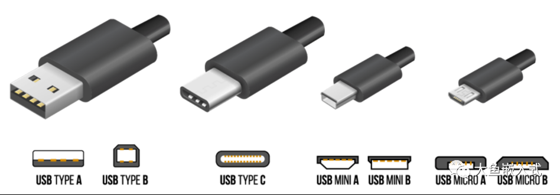

<!DOCTYPE html>
<html class="writer-html5" lang="zh-CN" >
<head>
  <meta charset="utf-8" />
  
  <meta name="viewport" content="width=device-width, initial-scale=1.0" />
  
<title>victor</title>


  
  <link rel="stylesheet" href="../../../../_static/css/theme.css" type="text/css" />
  <link rel="stylesheet" href="../../../../_static/pygments.css" type="text/css" />
  <link rel="stylesheet" href="../../../../_static/pygments.css" type="text/css" />
  <link rel="stylesheet" href="../../../../_static/css/theme.css" type="text/css" />
  <link rel="stylesheet" href="../../../../_static/default.css" type="text/css" />

  
  

  
  

  

  
  <!--[if lt IE 9]>
    <script src="../../../../_static/js/html5shiv.min.js"></script>
  <![endif]-->
  
    
      <script type="text/javascript" id="documentation_options" data-url_root="../../../../" src="../../../../_static/documentation_options.js"></script>
        <script data-url_root="../../../../" id="documentation_options" src="../../../../_static/documentation_options.js"></script>
        <script src="../../../../_static/jquery.js"></script>
        <script src="../../../../_static/underscore.js"></script>
        <script src="../../../../_static/_sphinx_javascript_frameworks_compat.js"></script>
        <script src="../../../../_static/doctools.js"></script>
        <script src="../../../../_static/sphinx_highlight.js"></script>
        <script src="../../../../_static/translations.js"></script>
        <script src="../../../../_static/js/baidutongji.js"></script>
    
    <script type="text/javascript" src="../../../../_static/js/theme.js"></script>

    
    <link rel="index" title="索引" href="../../../../genindex.html" />
    <link rel="search" title="搜索" href="../../../../search.html" /> 
</head>

<body class="wy-body-for-nav">

   
  <div class="wy-grid-for-nav">
    
    <nav data-toggle="wy-nav-shift" class="wy-nav-side">
      <div class="wy-side-scroll">
        <div class="wy-side-nav-search" >
          

          
            <a href="../../../../index.html" class="icon icon-home"> victor_文档
          

          
          </a>

          
            
            
          

          
<div role="search">
  <form id="rtd-search-form" class="wy-form" action="../../../../search.html" method="get">
    <input type="text" name="q" placeholder="在文档中搜索" />
    <input type="hidden" name="check_keywords" value="yes" />
    <input type="hidden" name="area" value="default" />
  </form>
</div>

          
        </div>

        
        <div class="wy-menu wy-menu-vertical" data-spy="affix" role="navigation" aria-label="main navigation">
          
            
            
              
            
            
              <!-- Local TOC -->
              <div class="local-toc"><ul>
<li><a class="reference internal" href="#">概要</a></li>
<li><a class="reference internal" href="#id2">二部</a></li>
<li><a class="reference internal" href="#id3">问题1</a></li>
<li><a class="reference internal" href="#log">log</a></li>
<li><a class="reference internal" href="#id4">解决</a></li>
<li><a class="reference internal" href="#id5">问题二</a></li>
<li><a class="reference internal" href="#id6">log</a></li>
<li><a class="reference internal" href="#id7">原因</a></li>
<li><a class="reference internal" href="#id8">问题三</a></li>
<li><a class="reference internal" href="#id9">log</a></li>
<li><a class="reference internal" href="#id10">原因</a></li>
<li><a class="reference internal" href="#id11">问题四</a></li>
<li><a class="reference internal" href="#id12">原因</a></li>
<li><a class="reference internal" href="#id13">解决</a></li>
<li><a class="reference internal" href="#pax">总结,pax开发格式化流程</a></li>
</ul>
</div>
            
          
        </div>
        
      </div>
    </nav>

    <section data-toggle="wy-nav-shift" class="wy-nav-content-wrap">

      
      <nav class="wy-nav-top" aria-label="top navigation">
        
          <i data-toggle="wy-nav-top" class="fa fa-bars"></i>
          <a href="../../../../index.html">victor_文档</a>
        
      </nav>


      <div class="wy-nav-content">
        
        <div class="rst-content">
        
          


<div role="navigation" aria-label="breadcrumbs navigation">

  <ul class="wy-breadcrumbs">
     
<li><a href="../../../../index.html" class="icon icon-home"></a> &raquo;</li>
<li>概要</li>
<li style="float: right;margin-left: 10px;"><a href="javascript:history.forward()">Forward</a></li>
<li style="float: right;margin-left: 10px;"><a href="javascript:history.back()">Go Back</a> | </li>
<li style="float: right;margin-left: 10px;"><a href="/index.html">Home</a> | </li>

    
      <li class="wy-breadcrumbs-aside">
        
          
        
      </li>
    
  </ul>

  
  <hr/>
</div>
          <div role="main" class="document" itemscope="itemscope" itemtype="http://schema.org/Article">
           <div itemprop="articleBody">
            
  <div class="section" id="id1">
<h1>概要<a class="headerlink" href="#id1" title="此标题的永久链接">¶</a></h1>
<p>展锐平台,裸板下载,本来按照原生流程下载pac包即可,但是公司做了一些定制化</p>
<p>所以需要定制化下载</p>
</div>
<div class="section" id="id2">
<h1>二部<a class="headerlink" href="#id2" title="此标题的永久链接">¶</a></h1>
<p>按照其他部门做过这个平台,先参考其他平台的下载流程</p>
<ul class="simple">
<li><p>sp cid</p></li>
<li><p>sp boot</p></li>
<li><p>pac (配置文件也打包在里面)</p></li>
<li><p>刷modem (即cpv)</p></li>
<li><p>paydroid</p></li>
</ul>
</div>
<div class="section" id="id3">
<h1>问题1<a class="headerlink" href="#id3" title="此标题的永久链接">¶</a></h1>
<p>原来可以开机的机器,格式化编译出来的软件后,下载报错,must download cfg before logo</p>
<p></p>
</div>
<div class="section" id="log">
<h1>log<a class="headerlink" href="#log" title="此标题的永久链接">¶</a></h1>
<ul class="simple">
<li><p>D:\Download_R27.23.2902\Bin\Log\2023_09_26\FAIL(262)_SN10808629492616_COM59-2023_09_26-13_43_31_511\UbootDump.txt</p></li>
</ul>
<div class="highlight-default notranslate"><div class="highlight"><pre><span></span>[00012971] avb_slot_verify.c:1418: DEBUG: avb_slot_verify() out_data is NULL
[00012977] avb_slot_verify.c:1454: DEBUG: avb_slot_verify() alloc slot_data success!
[00012985] avb_slot_verify.c:1478: DEBUG: avb_slot_verify() start load and verify vbmeta image
[00012993] avb_slot_verify.c:693: DEBUG: Loading vbmeta struct from partition &#39;vbmeta_a&#39;.
[00013010] uboot_avb_ops.c:200: DEBUG: Enter: implement validate_vbmeta_public_key().
[00013018] uboot_avb_ops.c:236: DEBUG: expected_public_key is matched.
[00013030]  read write count:0x7 ,msg_type:0x400
[00013036] sprd_get_imgversion: rpmb read blk 16382 fail! ret 1 
[00013042] hbc:magic = AVB0, partition_name = vbmeta, rollback_index = 1.
[00013049] avb_slot_verify.c:688: DEBUG: Loading vbmeta struct in footer from partition &#39;dtbo_a&#39;.
[00013065]  read write count:0x7 ,msg_type:0x400
[00013071] sprd_get_imgversion: rpmb read blk 16382 fail! ret 1 
[00013077] hbc:magic = AVB0, partition_name = dtbo, rollback_index = 1.
[00013084] avb_slot_verify.c:1252: DEBUG: load_and_verify_vbmeta() process success.
[00013091] avb_slot_verify.c:1255: DEBUG: load_and_verify_vbmeta() goto out.
[00013098] avb_slot_verify.c:1252: DEBUG: load_and_verify_vbmeta() process success.
[00013105] avb_slot_verify.c:1255: DEBUG: load_and_verify_vbmeta() goto out.
[00013112] avb_slot_verify.c:1598: DEBUG: avb_slot_verify() save slot_data to *out_data 
[00013120] avb_slot_verify.c:1612: DEBUG: avb_slot_verify() %^*&amp;&amp;*(* not alllow verification error
[00013128] avb_slot_verify.c:1616: DEBUG: avb_slot_verify() avb slot verify OK!
[00013599] g_status.unsave_recv_size=461138 g_status.total_size=461138 
[00013606] must download cfg before logo

[00013609] Error!dload_whole_raw_file(): Download write err!!!, stop!!!
</pre></div>
</div>
</div>
<div class="section" id="id4">
<h1>解决<a class="headerlink" href="#id4" title="此标题的永久链接">¶</a></h1>
<p>问题一,因为代码有限制必须下载了配置文件,才能下载logo</p>
<ul class="simple">
<li><p>idh.code/bsp/bootloader/u-boot15/pax/pax.c</p></li>
</ul>
<div class="highlight-default notranslate"><div class="highlight"><pre><span></span><span class="nb">int</span> <span class="n">pax_download_handle</span><span class="p">(</span><span class="nb">int</span> <span class="nb">type</span><span class="p">,</span> <span class="n">const</span> <span class="n">char</span> <span class="o">*</span><span class="n">name</span><span class="p">,</span> <span class="n">void</span> <span class="o">*</span><span class="n">data</span><span class="p">,</span> <span class="n">unsigned</span> <span class="n">long</span> <span class="n">long</span> <span class="o">*</span><span class="n">lsz</span><span class="p">)</span>
<span class="p">{</span>
	<span class="n">char</span> <span class="n">tmp_buf</span><span class="p">[</span><span class="mi">4096</span><span class="p">];</span>
	<span class="n">unsigned</span> <span class="n">long</span> <span class="n">width</span><span class="p">,</span> <span class="n">height</span><span class="p">,</span> <span class="n">bmp_width</span><span class="p">,</span> <span class="n">fb_width</span><span class="p">;</span>
	<span class="n">struct</span> <span class="n">bmp_image</span> <span class="o">*</span><span class="n">bmp</span><span class="p">;</span>
	<span class="n">unsigned</span> <span class="n">long</span> <span class="n">long</span> <span class="n">sz</span> <span class="o">=</span> <span class="o">*</span><span class="n">lsz</span><span class="p">;</span>

	<span class="n">printf</span><span class="p">(</span><span class="s2">&quot;==</span><span class="si">%s</span><span class="s2">, name: </span><span class="si">%s</span><span class="se">\n</span><span class="s2">&quot;</span><span class="p">,</span> <span class="vm">__func__</span><span class="p">,</span> <span class="n">name</span><span class="p">);</span>

	<span class="n">memset</span><span class="p">(</span><span class="n">tmp_buf</span><span class="p">,</span><span class="mi">0</span><span class="p">,</span><span class="mi">4096</span><span class="p">);</span>

	<span class="k">if</span><span class="p">(</span><span class="n">pax_porting_cfg_check</span><span class="p">(</span><span class="n">name</span><span class="p">))</span><span class="o">//</span><span class="n">here</span>
	<span class="p">{</span>
		<span class="n">printf</span><span class="p">(</span><span class="s2">&quot;must download cfg before </span><span class="si">%s</span><span class="se">\r\n</span><span class="s2">&quot;</span><span class="p">,</span><span class="n">name</span><span class="p">);</span>
		<span class="k">return</span> <span class="o">-</span><span class="mi">1</span><span class="p">;</span>
	<span class="p">}</span>
</pre></div>
</div>
</div>
<div class="section" id="id5">
<h1>问题二<a class="headerlink" href="#id5" title="此标题的永久链接">¶</a></h1>
<p>为了问题1,添加cfg下载,但是cfg又下载失败</p>
<p></p>
</div>
<div class="section" id="id6">
<h1>log<a class="headerlink" href="#id6" title="此标题的永久链接">¶</a></h1>
<div class="highlight-default notranslate"><div class="highlight"><pre><span></span>[00001109] Hit any key to stop autoboot:  0 ANDROID: Booting slot_a
[00001117] Watch Dog Trace: WDG_TimerStop
[00001121] do_download: loader 1 auto 0
[00001124] do_download:enter
[00001260] now time sec 0
[00001263] now alarm sec 0
[00001270] Find gpt header from user partition,emmc was used
[00001282] is_wr_mmc_rpmb_key rpmb key not write
[00001290] Error!dl_cmd_get_timestamp(): read timestamp magic(0) incorrect.
[00001297] dl_cmd_handler:enter
[00005520] g_status.unsave_recv_size=616 g_status.total_size=616 
[00005526] ==pax_download_handle, name: config
[00005530] cfg len 616
[00005532] cfg2 len 615
[00005540] cfg3 len 615
[00005546] permanent_config_get: i=0, key=TERMINAL_NAME, value=A930RTX
[00005552] hbc:925-pax_check_cfg_product:pmt_ret = 7, produce_buf = A930RTX, produce_cfg_buf = AF6.
[00005561] pax_check_cfg_product error
[00005566] Error!dload_whole_raw_file(): Download write err!!!, stop!!!
</pre></div>
</div>
</div>
<div class="section" id="id7">
<h1>原因<a class="headerlink" href="#id7" title="此标题的永久链接">¶</a></h1>
<ul class="simple">
<li><p>没有勾选格式化问题,检测到原有分区的型号名是A930RTX,不准下配置为AF6的配置文件</p></li>
</ul>
</div>
<div class="section" id="id8">
<h1>问题三<a class="headerlink" href="#id8" title="此标题的永久链接">¶</a></h1>
<p>pax1 分区,显示total size = 0,</p>
</div>
<div class="section" id="id9">
<h1>log<a class="headerlink" href="#id9" title="此标题的永久链接">¶</a></h1>
<div class="highlight-default notranslate"><div class="highlight"><pre><span></span>[00000387] record not found========================[cfg_partition_set 322] key:mmc_erase_content value length:1
[00000403] [cfg_partition_set 330] i:-1
[00000406] [cfg_partition_set 332] partition contain none records
[00000412] ========================[cfg_partition_get mmc_erase_content]
[00000418] record not found[cfg_partition_set 411] lrc:0x49
[00000423] ========================[cfg_partition_write 226]
[00000429] cfg_partition_write partition offset 0(real offset:0) length:24
[00000435] Error!common_raw_write(): write size(0x18 + 0x0) overflow the total partition size(0x0)
[00000444] error writing records(mmc_write fail)
[00000448] Error!common_raw_write(): write size(0x18 + 0x0) overflow the total partition size(0x0)
[00000457] error writing records(mmc_write fail)
[00000461] Error!common_raw_write(): write size(0x18 + 0x0) overflow the total partition size(0x0)
[00000470] error writing records(mmc_write fail)
[00000474] cfg_partition_write error
[00000478] Error!common_raw_read(): read size(0x1000 + 0x0) overflow the total partition size(0x0)
[00000486] pax_cfg_init:find signflag fail
[00000490] pax_cfg_init error!
</pre></div>
</div>
</div>
<div class="section" id="id10">
<h1>原因<a class="headerlink" href="#id10" title="此标题的永久链接">¶</a></h1>
<p>展锐工具问题,使用最新的R27工具有问题.使用R25.21.1401 rearch downloader 没有问题</p>
</div>
<div class="section" id="id11">
<h1>问题四<a class="headerlink" href="#id11" title="此标题的永久链接">¶</a></h1>
<p>格式化机器后,开机到动画界面,自动重启</p>
</div>
<div class="section" id="id12">
<h1>原因<a class="headerlink" href="#id12" title="此标题的永久链接">¶</a></h1>
<p>没有烧录展锐的license问题</p>
</div>
<div class="section" id="id13">
<h1>解决<a class="headerlink" href="#id13" title="此标题的永久链接">¶</a></h1>
<ul class="simple">
<li><p>使用展锐的Simba_R8.23.3054_P1 工具,加载Authorization_A12.seq,在使用展锐的u盾,下载lincense</p></li>
</ul>
<p>机器顺利开机</p>
</div>
<div class="section" id="pax">
<h1>总结,pax开发格式化流程<a class="headerlink" href="#pax" title="此标题的永久链接">¶</a></h1>
<ul class="simple">
<li><p>使用R25.21.1401 download,选择pac包,添加对应机型的配置文件</p></li>
<li><p>使用paydroidtool下载cpv</p></li>
<li><p>使用paydroidtool下载paydroid包</p></li>
<li><p>使用Simba_R8.23.3054_P1工具,烧录lincense</p></li>
</ul>
</div>


           </div>
           
          </div>
          <footer>

  <hr/>

  <div role="contentinfo">
    <p>
        &#169; 版权所有 2022, victor.

    </p>
  </div>
    
    
    
    利用 <a href="https://www.sphinx-doc.org/">Sphinx</a> 构建，使用了 
    
    <a href="https://github.com/readthedocs/sphinx_rtd_theme">主题</a>
    
    由 <a href="https://readthedocs.org">Read the Docs</a>开发.

<script charset="UTF-8" id="LA_COLLECT" src="//sdk.51.la/js-sdk-pro.min.js"></script>
<script>LA.init({id: "JoV5csIHTGhHiGQ4",ck: "JoV5csIHTGhHiGQ4"})</script>

<br/>
<script id="LA-DATA-WIDGET" crossorigin="anonymous" charset="UTF-8" src="https://v6-widget.51.la/v6/JoV5csIHTGhHiGQ4/quote.js?theme=#4C8AC2,#BB2626,#040000,#333333,#AE3535,#1690FF,14&f=14"></script>


</footer>
        </div>
      </div>

    </section>

  </div>
  

  <script type="text/javascript">
      jQuery(function () {
          SphinxRtdTheme.Navigation.enable(true);
      });
  </script>

  
  
    
   

</body>
</html>